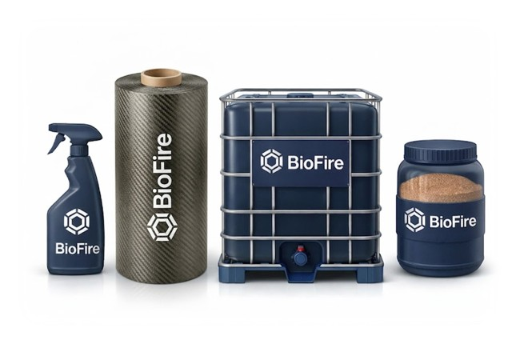

BioFire
Enabling Sustainable Materials to Meet Fire Safety Standards Without Adding Harmful Chemicals
Mission
BioFire uses biotechnology to deliver a novel, biobased flame-retardant for a multi-billion-euro market shifting toward higher-functionality, regulation-ready, and sustainable formulations.

The Problem
Fire safety regulations are a hard barrier to adopting many biobased construction materials. Natural fiber composites (NFCs) such as flax, hemp, cork-based panels are attractive for their low environmental footprint and desirable mechanical and insulation properties, but they are inherently flammable and typically fail to meet required fire classifications under EN 13501-1. This standard defines material fire performance from A to F in Europe. Natural fibers often fall into D or E, while most construction applications require B or higher. As a result, these materials are excluded from regulated uses, such as in load- and non-load- bearing construction components, where fire classification is mandatory for permitting and market access.
State of the Art
Fire safety still depends heavily on mineral fillers and halogen-based flame retardants. They often require high loadings, complicate processing, raise costs, and can degrade material performance. Many also come with environmental and end-of-life drawbacks. Meanwhile, regulations are tightening and manufacturers need safer, more sustainable options that still meet demanding fire standards. Biobased alternatives are widely discussed in research, but very few have proven scalable, cost-viable, and compatible with industrial manufacturing.
Our Solution
BioFire develops a 100% biobased, biodegradable, non-halogen flame retardant made from bacterial extracellular polymeric substances (EPS). In nature, EPS functions as microbial “glue” in biofilm formation. As a flame-retardant, it acts primarily through a condensed-phase mechanism: upon fire exposure, its complex composition (proteins, polysaccharides, melanin, and inorganic compounds) promotes the formation of a stable char layer. This char acts as a physical barrier, reducing heat and fuel transfer. Beyond flame retardancy, this same composition provides intrinsic adhesive functionality (through proteins and sugars) and contributes to UV resistance (through melanin), making the material multifunctional. The material is developed under the name Lijmexa, reflecting both its adhesive properties (“lijm” in Dutch) and its alkaline extraction.
What Makes BioFire Different
Why Now
Commercial Traction
Collaboration
We partner with composite manufacturers, flame-retardant formulators, and compounders (local or international) for a quick market entry and low CAPEX implementation. If you're an investor and want to know about our position in the value chain and want to know our revenue model, please feel free to contact us.
Let's Collaborate